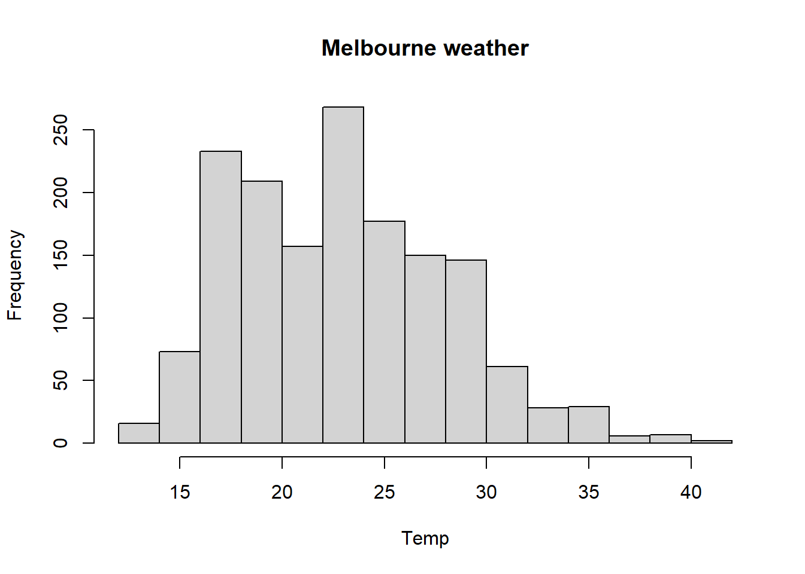
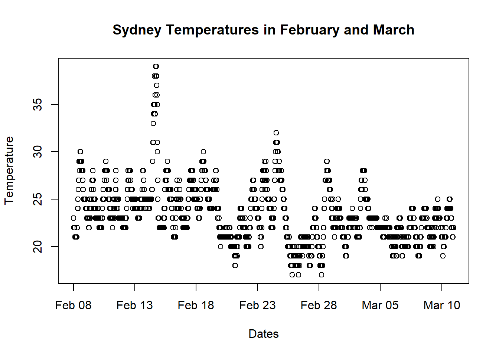
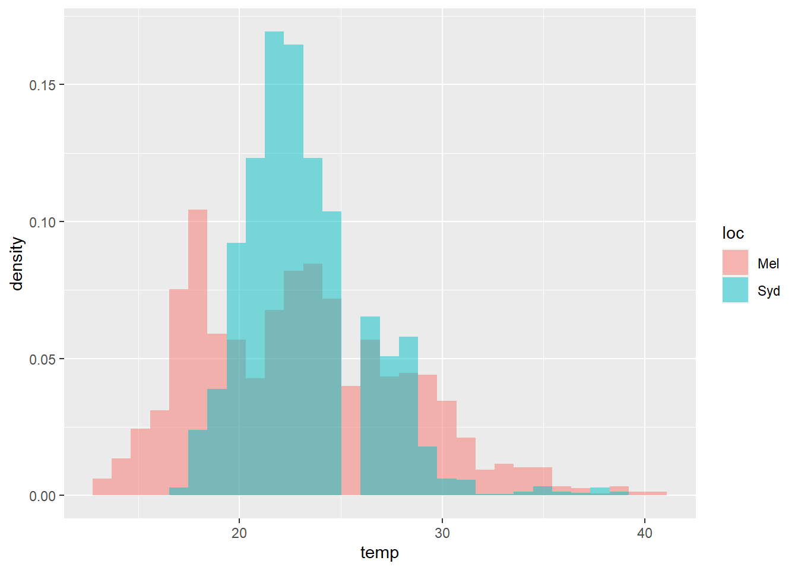

6 Simplified Template for DSI AT2
6.1 Preface: How to use this guide
This document has a suggested structure for your report, starting from section 1 “Introduction.” Before that, we have some tutorials on how to set up your environment, which you can delete once you’ve read so you don’t hand them in.
The basic structure of this template is similar to the style of academic papers and, if followed, should ensure that everything you need to include is present. I have included the assessment criteria at the relevant places to remind you of what needs to be in the report.
You are free to vary the structure by renaming the sections, including other sections, or dropping ones that you don’t use. Keep in mind that the suggested structure is conventional (and therefore easy to follow), practical, and comprehensive. (Criterion 5: Professionally presented in a manner appropriate to the discipline.) If you do use this template, you will need to install R, RStudio, and the packages listed in the code block at the head of this document.
Note: We have provided some sample code below, along with some text between angle brackets, < >. All of this should be replaced by your work.
Please don’t forget to include a title, name, student number, etc. on a covering sheet
6.2 Set up a project
It is best to set up your assignment as a project, rather than just have a single RMarkdown file. Setting up a project will define your working directory based on where a .RProj file is located. Other files and folders can then be found relative to that .RProj file. This gives projects some advantages:
- It’s easier to find your files, because you can set up subfolders with consistent names
- You can refer to your data with relative referencing, eg ../datamy_data.csv, rather than having to type C:\folder\other_folder\data\my_data.csv.
- When you open your project, it unloads your libraries and clears your memory. That way, the libraries that you had loaded before won’t get in the way of the one you’re working on now. But when you close this project, it goes back to the state it was in before.
To start a project in RStudio, - click File -> New Project and follow the prompts to set up a new project in a new folder. - Create subfolders called “R” and “data.” - Save this template to the R folder, along with any other R code files you create on the project. - Save any data files (eg csv files, or screenshots from your other analysis) to the data folder.
I highly recommend this link on project-oriented workflow
6.3 Install packages
If we don’t have these packages, we’ll need to download them from the internet. Here’s some code that does that. The code is currently commented out (that is, it has a “#” at the start of the line.) Remove the “#” if you want to install those packages.
# install.packages(c("tidyverse", "here", "knitr"))
# devtools::install_github("benmarwick/wordcountaddin",
# type = "source",
# dependencies = TRUE)
## Go to Tools > Addins > Browse Addins, and then search for wordcountaddin.
## There will be two. Click them one at a time and click the Execute button. Now, test the file by using the ‘knit’ button (just above this code chunk). Read more about R markdown and ‘kniting’ (rendering) documents here: https://rmarkdown.rstudio.com/authoring_quick_tour.html#overview
Installing the packages only puts them on our computer. To use them in our project, we need them loaded.
# Load libraries
library(psych)
library(devtools)
library(tidyverse)
library(here)
library(knitr)
library(bookdown) #supercedes the kfigr tool below, which is a bit ropey
#library(kfigr) #this lets us crossreference figures, etc. Read more about it
#at https://github.com/mkoohafkan/kfigr/edit/master/vignettes/introduction.Rmd 6.4 Calculating word length
The word limit is 2800 words (excluding data excerpts and appendices, visualisations, and references)
To check this, you can either copy the html output to word, or use the addin Word Count Addin. E.g.
wordcountaddin:::text_stats()
6.5 Citations
In this assignment, we’ll use footnotes to do citation. Here’s how to do it.2
6.6 Formatting guide
Here are some formatting tricks you can use.
6.6.1 Fonts
italics
bold
bold italics
verbatim code
superscript2
subscript2
This is a block quotation, if you have a long quote from someone this is the best way to do it (but don’t forget the citation). This is a very long line that will still be quoted properly when it wraps. Oh boy let’s keep writing to make sure this is long enough to actually wrap for everyone. Oh, you can put Markdown into a blockquote.
6.6.2 Headings
Add headings using a # (but note, to get that to display properly I had to ‘escape’ it using a preceding backslash). One # gives you a line with Heading 1 style, ## gives you Heading 2 etc.
6.6.3 Lists
- Numbered
- Lists
- Are
- Possible
- And so
- are bulleted lists
More examples can be found on the cheat sheet at this hyperlink
6.6.4 Equations
If you want to insert equations (you probably don’t) you can do so using the syntax below. You can also insert bits of inline code like, so the 2+2 here is produced by a piece of code, and the 4 is produced by an equation (namely 2+2)
The deterministic part of the model is defined by this in-line equation as \(\mu_i = \beta_0 + \beta_1x\), and the stochastic part by the centered equation:
\[ \frac{1}{\sqrt{2\pi}\sigma}e^{-(x-\mu_i)^2/(2\sigma^2)} \] More examples at this hyperlink
6.7 Embedding an image
You might have saved some analysis from another program as a picture file. This is how you paste it:
Let’s embed a UTS logo, which I’ve saved to the data folder.

6.8 Introduction
< Write a paragraph that gives an overview of what you’ve done. Also, make sure to include the assignment title, your name, and student number in rows 2 to 4 at the top of the page in RMarkdown. >
6.9 Description of process or methods
<this is where you give details about what you’ve been collecting and how much you data have; why you choose this data to collect; how you managed the quality and frequency of collection issues; what you did to anonymise or de-identify the data, and how you dealt with the storage and sharing of data within the group. Do not include a dump of all your data here. If you wish to include examples of data (and I think you should) then put these in an appendix to the report.
Criterion 1: Justifies a method to obtain data from multiple sources, for gaining insight into a chosen problem, including analysis of data quality issues in the individual and group data.>
6.10 Analysis
<describe how you analysed your data, and how you contrasted your data with the group’s data.
Criterion 2: Justifies the analysis of the obtained data, including quality issues, to draw conclusions in a professional and engaging manner.>
6.10.1 Example analysis: Get data
If you downloaded the full folder, then the csv files you need are there. You can also get your own weather data if you want.
library(tidyverse)
library(here)
# Load a csv file from our hard drive
# weather_sydney <- read_csv(here::here("data", "syd_weath.csv"))
# weather_melbourne <- read_csv(here::here("data", "mel_weath.csv"))
weather_sydney <- read_csv("data/templates/syd_weath.csv")
weather_melbourne <- read_csv("data/templates/mel_weath.csv")
# Load an Excel file from our hard drive
# sydney_xl <- readxl::read_excel(path = here::here("data", "syd_weath.xls"))
sydney_xl <- readxl::read_excel(path = ("data/templates/syd_weath.xls"))
# Simulate our own data - 5 rows and 2 columns
my_fake_data1 <- tibble(first_column = c(1, 1, 2, 1, 1),
second_column = c("a", "b", "a", "a", "b"),
)
#Simulate normally distributed data
my_fake_data2 <- tibble(normal_column = rnorm(n = 50, mean = 0, sd = 1),
higher_column = rnorm(n = 50, mean = 0.1, sd = 1),
lower_column = rnorm(n = 50, mean = -0.1, sd = 1)
)6.10.2 Example analysis: Explore data
#Explore using base R techniques
head(weather_sydney) # First few rows of the weather_sydney table## # A tibble: 6 x 22
## X1 date temp dew_pt hum wind_spd wind_gust dir vis
## <dbl> <dttm> <dbl> <dbl> <dbl> <dbl> <dbl> <chr> <dbl>
## 1 1 2018-02-08 00:00:00 23 15 52 16.7 NA North 30
## 2 2 2018-02-08 00:00:00 23 15 61 16.7 NA North NA
## 3 3 2018-02-08 00:30:00 22 15 64 13 NA NNW NA
## 4 4 2018-02-08 01:00:00 22 15 56 11.1 NA NNW NA
## 5 5 2018-02-08 01:00:00 22 15 64 11.1 NA NNW NA
## 6 6 2018-02-08 01:30:00 22 15 64 13 NA North NA
## # ... with 13 more variables: pressure <dbl>, wind_chill <lgl>,
## # heat_index <dbl>, precip <lgl>, precip_rate <lgl>, precip_total <lgl>,
## # cond <chr>, fog <dbl>, rain <dbl>, snow <dbl>, hail <dbl>, thunder <dbl>,
## # tornado <dbl>dim(weather_sydney) # Number of rows and columns## [1] 2206 22colnames(weather_sydney) #Column names## [1] "X1" "date" "temp" "dew_pt" "hum"
## [6] "wind_spd" "wind_gust" "dir" "vis" "pressure"
## [11] "wind_chill" "heat_index" "precip" "precip_rate" "precip_total"
## [16] "cond" "fog" "rain" "snow" "hail"
## [21] "thunder" "tornado"#Explore using techniques from the tidyverse package
glimpse(weather_sydney) # Does all of the above base R techniques, but neater## Rows: 2,206
## Columns: 22
## $ X1 <dbl> 1, 2, 3, 4, 5, 6, 7, 8, 9, 10, 11, 12, 13, 14, 15, 16, 17~
## $ date <dttm> 2018-02-08 00:00:00, 2018-02-08 00:00:00, 2018-02-08 00:~
## $ temp <dbl> 23, 23, 22, 22, 22, 22, 22, 22, 22, 21, 21, 21, 21, 21, 2~
## $ dew_pt <dbl> 15, 15, 15, 15, 15, 15, 16, 16, 15, 15, 15, 15, 15, 15, 1~
## $ hum <dbl> 52, 61, 64, 56, 64, 64, 60, 69, 64, 62, 68, 68, 62, 68, 7~
## $ wind_spd <dbl> 16.7, 16.7, 13.0, 11.1, 11.1, 13.0, 11.1, 11.1, 11.1, 9.3~
## $ wind_gust <dbl> NA, NA, NA, NA, NA, NA, NA, NA, NA, NA, NA, NA, NA, NA, N~
## $ dir <chr> "North", "North", "NNW", "NNW", "NNW", "North", "NNW", "N~
## $ vis <dbl> 30, NA, NA, NA, NA, NA, NA, NA, NA, 30, NA, NA, NA, NA, N~
## $ pressure <dbl> 1020, 1020, 1020, 1020, 1020, 1019, 1020, 1019, 1019, 101~
## $ wind_chill <lgl> NA, NA, NA, NA, NA, NA, NA, NA, NA, NA, NA, NA, NA, NA, N~
## $ heat_index <dbl> NA, NA, NA, NA, NA, NA, NA, NA, NA, NA, NA, NA, NA, NA, N~
## $ precip <lgl> NA, NA, NA, NA, NA, NA, NA, NA, NA, NA, NA, NA, NA, NA, N~
## $ precip_rate <lgl> NA, NA, NA, NA, NA, NA, NA, NA, NA, NA, NA, NA, NA, NA, N~
## $ precip_total <lgl> NA, NA, NA, NA, NA, NA, NA, NA, NA, NA, NA, NA, NA, NA, N~
## $ cond <chr> "Partly Cloudy", "Clear", "Clear", NA, "Clear", "Clear", ~
## $ fog <dbl> 0, 0, 0, 0, 0, 0, 0, 0, 0, 0, 0, 0, 0, 0, 0, 0, 0, 0, 0, ~
## $ rain <dbl> 0, 0, 0, 0, 0, 0, 0, 0, 0, 0, 0, 0, 0, 0, 0, 0, 0, 0, 0, ~
## $ snow <dbl> 0, 0, 0, 0, 0, 0, 0, 0, 0, 0, 0, 0, 0, 0, 0, 0, 0, 0, 0, ~
## $ hail <dbl> 0, 0, 0, 0, 0, 0, 0, 0, 0, 0, 0, 0, 0, 0, 0, 0, 0, 0, 0, ~
## $ thunder <dbl> 0, 0, 0, 0, 0, 0, 0, 0, 0, 0, 0, 0, 0, 0, 0, 0, 0, 0, 0, ~
## $ tornado <dbl> 0, 0, 0, 0, 0, 0, 0, 0, 0, 0, 0, 0, 0, 0, 0, 0, 0, 0, 0, ~#Explore by creating histograms
hist(weather_sydney$temp, main = "Sydney weather", xlab = "Temp")
hist(weather_melbourne$temp, main = "Melbourne weather", xlab = "Temp")
#Explore by creating scatterplots
plot(x = weather_sydney$date,
y = weather_sydney$temp,
xlab = "Dates",
ylab = "Temperature",
main = "Sydney Temperatures in February and March"
)
#Category counts
table(weather_sydney$cond) # Count of each condition##
## Clear Drizzle
## 285 3
## Haze Heavy Rain Showers
## 63 2
## Light Drizzle Light Rain
## 11 40
## Light Rain Showers Light Thunderstorms and Rain
## 72 5
## Mostly Cloudy Overcast
## 591 27
## Partly Cloudy Rain
## 362 10
## Rain Showers Scattered Clouds
## 13 247
## Thunderstorm Unknown
## 1 4prop.table(table(weather_sydney$cond)) * 100 # Percentage of each condition##
## Clear Drizzle
## 16.41705069 0.17281106
## Haze Heavy Rain Showers
## 3.62903226 0.11520737
## Light Drizzle Light Rain
## 0.63364055 2.30414747
## Light Rain Showers Light Thunderstorms and Rain
## 4.14746544 0.28801843
## Mostly Cloudy Overcast
## 34.04377880 1.55529954
## Partly Cloudy Rain
## 20.85253456 0.57603687
## Rain Showers Scattered Clouds
## 0.74884793 14.22811060
## Thunderstorm Unknown
## 0.05760369 0.23041475#6.10.3 Example Analysis: Explore data via statistical summaries
kable(rbind(psych::describe(weather_sydney$temp),
psych::describe(weather_melbourne$temp)),
caption = "Summary of Mel & Sydney weather")| vars | n | mean | sd | median | trimmed | mad | min | max | range | skew | kurtosis | se | |
|---|---|---|---|---|---|---|---|---|---|---|---|---|---|
| X1 | 1 | 2206 | 23.37307 | 3.006867 | 23.0 | 23.16025 | 2.9652 | 17 | 39.0 | 22.0 | 1.097941 | 2.9843386 | 0.0640194 |
| X11 | 1 | 1562 | 23.01485 | 5.097803 | 22.8 | 22.73952 | 5.9304 | 13 | 40.4 | 27.4 | 0.475591 | -0.2072643 | 0.1289860 |
#note, you should label the rowsYou’ll see above that I used a labelled the table, I did that by using the chunk name, and type like this: \@ref(tab:Summaryweather. Now, I can use that to refer to it like this 6.1
Of course, you don’t have to just display the correlation, you can **output the coefficient in-line with code: 0.6514409*
6.10.4 Example analysis: Tidy data
To tidy data is to prepare it for analysis. The tidyverse package includes a package called dplyr which does this very well. Here are some examples
#Combine the two weather data sets by putting the rows on top of each other
weather_combined <- weather_sydney %>%
rbind(weather_melbourne)
# Select just three of the columns
weather_combined <- weather_combined %>%
select(date, temp, hum)
# Filter so that you only have rows where temperature > 28 degrees and humidity > 50%
weather_combined <- weather_combined %>%
filter(temp > 28,
hum > 50
)
# Mutate (add a new column) that adds temperature and humidity
weather_combined <- weather_combined %>%
mutate(my_weird_column = temp + hum)
# Do everything again, but in one long piece of tidying
weather_combined <- weather_sydney %>%
rbind(weather_melbourne) %>%
select(date, temp, hum) %>%
filter(temp > 28, hum > 50) %>%
mutate(my_weird_column = temp + hum)
# For more types of tidying to add to a chain like this, google dplyr tutorials
#Look at what we have wrought!
weather_combined## # A tibble: 46 x 4
## date temp hum my_weird_column
## <dttm> <dbl> <dbl> <dbl>
## 1 2018-02-10 15:00:00 29 55 84
## 2 2018-02-10 15:30:00 29 55 84
## 3 2018-02-14 10:30:00 29 62 91
## 4 2018-02-14 11:00:00 29 58 87
## 5 2018-02-15 15:30:00 29 51 80
## 6 2018-02-15 16:00:00 29 55 84
## 7 2018-02-18 11:30:00 29 58 87
## 8 2018-02-18 12:30:00 29 55 84
## 9 2018-02-18 13:00:00 29 55 84
## 10 2018-02-18 13:30:00 29 58 87
## # ... with 36 more rows6.10.5 Example analysis: Create charts for presentation
ggplot2 is a library that adds analysis one layer at a time, giving you a lot more control over what you want to see. This can make it a better tool for making charts designed to communicate ideas with your audience, rather than the standard charts that we used before. To explore the philosophy behind ggplot2, and get links to galleries and cheat sheets, go to click this hyperlink.
#Get data
temp <- weather_sydney %>%
mutate(loc = "Syd") %>%
rbind(weather_melbourne %>% mutate(loc = "Mel")) %>%
select(temp, loc)
#Make chart
ggplot(temp, aes(x = temp, fill = loc)) +
geom_histogram(alpha = .5,
aes(y = ..density..),
position = 'identity'
) 
6.11 Findings and conclusion
<what conclusions did you come to as a result of the analysis of your data and of the group’s data.
Criterion 2: Justifies the analysis of the obtained data, including quality issues, to draw conclusions in a professional and engaging manner.>
6.12 Discussion
<discuss aspects of the process that you see as important. For example, what difficulties did you encounter; how could you avoid problems if you did it again; etc>
Your ‘justification’ and evaluation of your approach is likely to go in this section, but may also be threaded through the preceding sections. This includes Criterion 3: Identifies, contextualises, and reflects on the ethical, privacy, and legal issues relevant to the collection and analysis of personal data of self and others. >
6.13 Reflection
<General reflection on what you learnt during this task. What are you unsure about? What would you do differently if you had to do it all again?
Criteria 4: Connects the individual experience of this QS project to the practice of data science (and the preceding three criteria). >
6.14 References
<include any cited references, formatted in Harvard style.>
6.15 Appendices
<include samples of your data - enough to give a sense of what your raw data looks like>
6.16 Other
If you are submitting any additional materials, such as short multimedia presentations or visualisations (such as Prezi, or voice-over video/screen capture, etc), they probably can’t be submitted through canvas so you will need to arrange some other process such as posting on YouTube or elsewhere, or handing in a memory stick. Please ensure that additional material like this is accessible to the markers (test this by accessing it through someone else’s computer) and avoid any restrictive or proprietary software constraints. Remember to check any included web links!
Diagrams, figures, charts and illustrations must be labelled, and explained, and must be referred to from somewhere in the report. If drawn from another source, then the source must be provided.
In the template file, this line (wrapped in ``) is used to insert the references. Testing to see if just using the heading works, with a hash before the reference. r if (knitr::is_html_output()) ’ References {-}’
This is the text of the footnote which you can see at the bottom of the page.↩︎